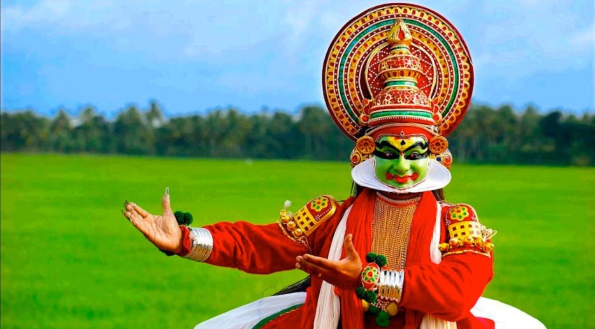
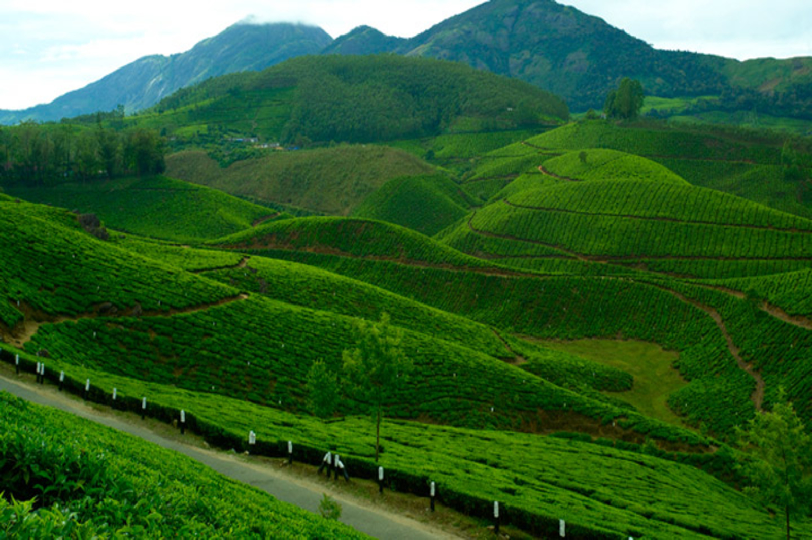
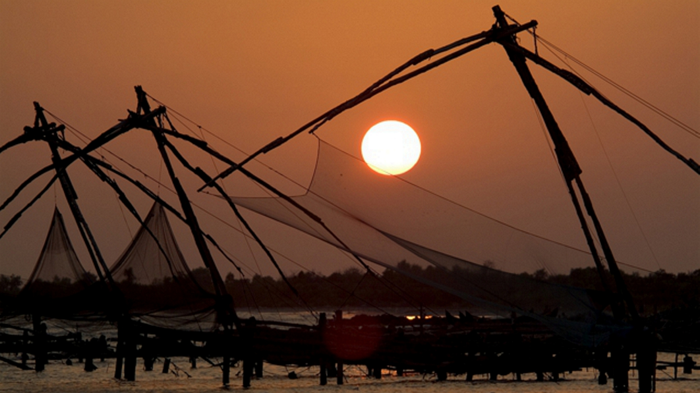
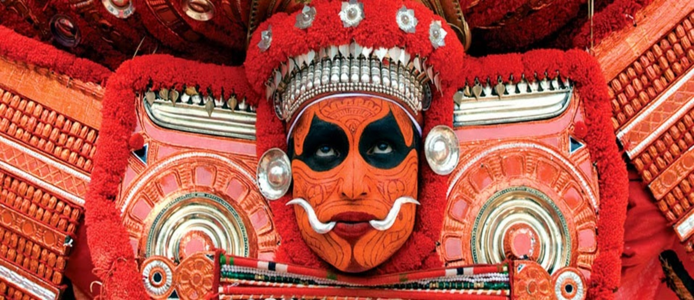
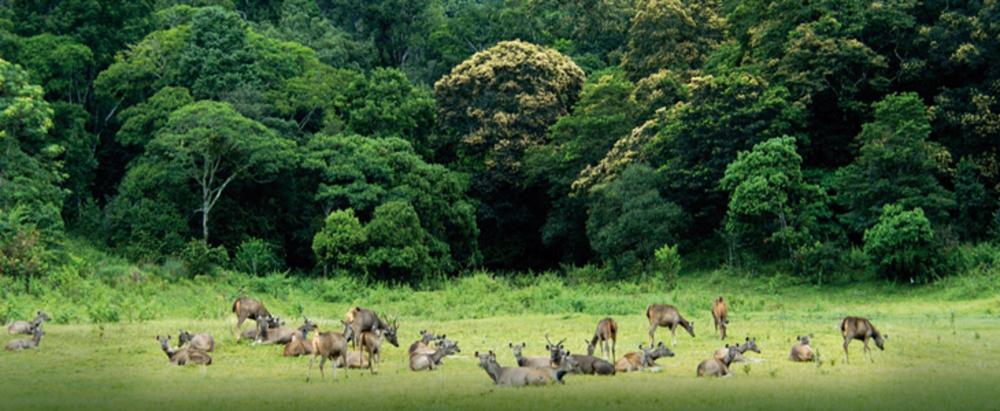

Spices have always played an integral part of Kerala's history. Our food is an example of the very same and we have offerings for people from all over the world. Be it famous international restaurant chains or local eateries, we have everything a foodie could ask for prepared with that special Kerala taste to it. The cuisine here caters to vegetarians and non-vegetarians alike. Let the flavours of our past and our future take you on a delightful journey.
Ayurveda is an alternative medicine system with historical roots. Therapies are typically based on complex herbal compounds, minerals and metal substances.
Ayurveda treatment starts with an internal purification process, followed by a special diet, herbal remedies, massage therapy, yoga, and meditation. The concepts of universal interconnectedness, the body's constitution (prakriti), and life forces (doshas) are the primary basis of ayurvedic medicine.
Kerala , The Green Paradise! The lush greenery greets you everywhere. It doesn’t matter whether you are in city, suburban or a rural village, the green flora beckons you. The color green is the color of nature, fertility and of life. It is the color of balance. It symbolizes harmony, well being and growth.
Kerala is famed for its equally enchanting village life as well, besides the presence of other prominent attractions. Blessed with simplicity, the villagers in the God's own country live their life at a languid pace and cherish each day in life with their hard work, skills and craftsmanship. This Village Life in Kerala tour is meant to enrich a traveller with virgin village lifestyle here.
Kerala, a slice of green sandwiched between the Western Ghats and the Arabian Sea, is rich with art, artforms, rituals and festivals. The State owns a centuries-old history and has a long tradition in art and literature. The art forms of Kerala are unique and related to religion, their worship and rituals. Responsible Tourism offers tour packages to experience the cultural life of Kerala.
Have you ever gone cruising in a houseboat on the backwaters of Kerala? If you haven't, make sure you do. This is easily one amongst the most remarkable and unique experiences that our state has to offer.
Present day houseboats are huge, slow moving exotic barges used for leisure trips, and are in fact a reworked version of the Kettuvallams of olden times.
Kerala brings to you a magical tryst with nature through its various hills and hill stations. A majority of these places in Kerala are situated on the windward side of the majestic Western Ghats. Enjoy the long chain of lush mist-clad hill stations of Kerala and explore the various plantations, wildlife, flora and fauna that comprise an integral part of this experience.
Kerala has birthed and nurtured a plethora of art forms over a thousand years. Our shores have watched them evolve and flourish in various shapes and forms. They can be categorizes as performing artforms, ritual artforms, martial arts and folk arts.
Kerala does not have incessant rains that stop all activity. It rains for a few hours with sunny interludes. Occasionally the rains might stretch on for a few days but sunshine is never far away. These golden interludes provide an equilibrium to life's natural flow Kerala has mainly two rainy seasons. The Southwest Monsoon that arrives in the month of June is called Edavappathy, as it comes in the middle of the month of Edavam on the Malayalam Calendar.
There are a number of popular wildlife sanctuaries in Kerala housing exotic and rare species of flora and fauna. Nestled in the elaborate forest of the majestic Western Ghats or Sahyadri Ranges in Kerala are fourteen wildlife sanctuaries and two tiger reserves. Kerala also has six national parks containing protected and endangered species like the Indian Sloth-Bear, Lion-Tailed Macaque, Indian Bison, Bengal Tiger, Nilgiri Tahr etc.
Kerala is home to a number of spectacular beaches that will take your breath away. As Kerala is a coastal state, some of the most popular tourist destinations in Kerala are beaches like Kovalam, Varkala, Chowara, Chavakkad, Nattika, Cherai, Kizhunna, Poovar and the list goes on and on. The Kerala coast is replete with exotic resorts and hotels where travellers can spend their time sunbathing, swimming or simply enjoying the stunning view.
Kerala is popular for having numerous majestic waterfalls. These scintillating cascades are famous picnic spots and excursion destinations round the year. The luscious Kerala waterfalls are a sight your eyes will never tire of feasting upon.